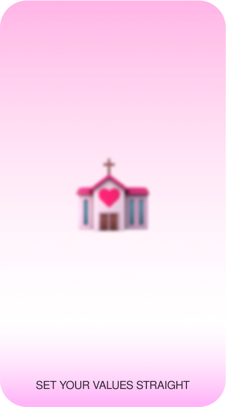
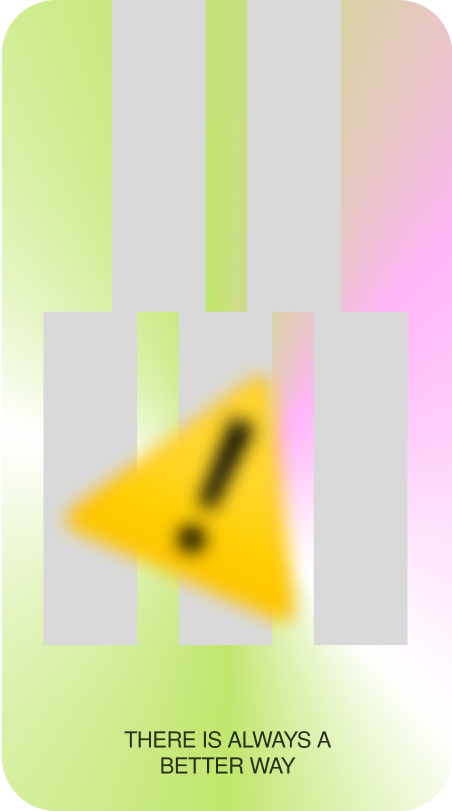

When it comes to working with clients, pitching your ideas and the way you present them plays an important role with the clients’ understanding and trust in you. Things that can help:
1. Asking many questions to help build up all the steps in the design process
2. Making a plan and tracking your progress
1. Asking many questions to help build up all the steps in the design process
2. Making a plan and tracking your progress
Pictures, sticky notes, packaging samples, art... whatever that inspires you. Place your moodboard of inspiration somewhere where you can see it at least once a day.
You will always have your vision infront of you (want kind of work and projects would you like and be proud to do) so you can keep yourself on your tracks and stay motivated.
You will always have your vision infront of you (want kind of work and projects would you like and be proud to do) so you can keep yourself on your tracks and stay motivated.
When finding a job, try and figure out what you want beforehand. Read about it, talk to people about it (from different professions).
Once you get a general idea of what you want, you will most likely find out it means fuckall.
Just try and see for yourself and get actual experience, find out what is good and bad for you, but keep in mind other peoples experiences like mentioned before.
It is ok to fail, as long as you don’t go broke during the process.
Once you get a general idea of what you want, you will most likely find out it means fuckall.
Just try and see for yourself and get actual experience, find out what is good and bad for you, but keep in mind other peoples experiences like mentioned before.
It is ok to fail, as long as you don’t go broke during the process.
When trying to establish a network
don’t:
think of them as assetstalk only about the jobtalk only about you
do:
try and get to know themactively listenthrow in some aspects of what you do too (and why this is important)be you and f#ck it we ball.
They will remember you when they will be searching for someone to help them with their project
don’t:
think of them as assetstalk only about the jobtalk only about you
do:
try and get to know themactively listenthrow in some aspects of what you do too (and why this is important)be you and f#ck it we ball.
They will remember you when they will be searching for someone to help them with their project
Ask yourself if you’d proudly associate with the ethos of this project even if it wasn’t paid.
If the answer is no then you shouldn’t do it.
If the answer is no then you shouldn’t do it.
Prioritize digital mediums with your client over print when possible.
Digital designs reduce paper consumption and allow for easier updates without the need for physical reprints.
Digital designs reduce paper consumption and allow for easier updates without the need for physical reprints.
Sharpen your expression capabilities:
1. Collect objects, screenshots, opinions, ideas etc. that trigger criticism in you.
2. Monthly or weekly review them and respond trough visual language.
They can be anything, ranging from artistic, proactive, manifesto etc.
If you’re feeling frisky, Use this opportunity to try out a new technique, tool, approach... Anything really, just as long as you stay opinionated (yet humble).
1. Collect objects, screenshots, opinions, ideas etc. that trigger criticism in you.
2. Monthly or weekly review them and respond trough visual language.
They can be anything, ranging from artistic, proactive, manifesto etc.
If you’re feeling frisky, Use this opportunity to try out a new technique, tool, approach... Anything really, just as long as you stay opinionated (yet humble).
Instead of spreading yourself thin across numerous design fields, focus on one to three specific fields and specialize in them.
Much like a restaurant that excels by perfecting a limited menu, a designer can achieve excellence by narrowing their focus to a few areas of expertise.
How to choose your fields?
1. list what you want to work on
2.have a set of moral values you go by (they can usually direct you in the right way)
3.list what you are good at
4.choose your fields
5.review them by your set
of moral values
6.come back to them from time
to time.
Much like a restaurant that excels by perfecting a limited menu, a designer can achieve excellence by narrowing their focus to a few areas of expertise.
How to choose your fields?
1. list what you want to work on
2.have a set of moral values you go by (they can usually direct you in the right way)
3.list what you are good at
4.choose your fields
5.review them by your set
of moral values
6.come back to them from time
to time.
When it comes to printed matter in graphic design, present options (such as paper, printing techniques, and materials for binding) that are better for the environment and can still look as good as those that are not as environmentally friendly.
If they are more expensive, explain why these options are better than the cheaper ones.
If they are more expensive, explain why these options are better than the cheaper ones.
If/when in the wrong
1. Admit your mistake directly and take responsibility for it.
2. Propose a solution or express your willingness to fix the situation. Depending on the mistake, outline steps you'll take to make things right. Whether it involves correcting an error, offering assistance, or making amends, show your commitment to resolving the issue.
3. Express how you'll take measures to prevent a similar error in the future. This could involve additional training, implementing new procedures, or being more cautious.
1. Admit your mistake directly and take responsibility for it.
2. Propose a solution or express your willingness to fix the situation. Depending on the mistake, outline steps you'll take to make things right. Whether it involves correcting an error, offering assistance, or making amends, show your commitment to resolving the issue.
3. Express how you'll take measures to prevent a similar error in the future. This could involve additional training, implementing new procedures, or being more cautious.
A finished project is better than a perfect project. Set a timeframe for whatever you’re doing at the moment and move on once the time’s up.

When applying to jobs, research the companies and their background and see if their values and what they stand for align with yours.
From A straight to Z (short edition).
Communication on the job.
Talk with the client to establish clear project goals and measurable outcomes
After completing the project, review the client and consumer comments on how the project performed and identify areas for improvement. To better your experience for future projects.
Communication on the job.
Talk with the client to establish clear project goals and measurable outcomes
After completing the project, review the client and consumer comments on how the project performed and identify areas for improvement. To better your experience for future projects.

Always try to find more sustainable ways of producing your work.
Research different resources, ask around, get deals, talk with others to get ideas, make connections with the people that can help you do that and establish a long lasting relationship, etc.
Sometimes it’s also worth cutting some things out to make things for new better things. F#ck making the flyers if you can save some of that paper waste by putting your information on a bus ad, idk.
Research different resources, ask around, get deals, talk with others to get ideas, make connections with the people that can help you do that and establish a long lasting relationship, etc.
Sometimes it’s also worth cutting some things out to make things for new better things. F#ck making the flyers if you can save some of that paper waste by putting your information on a bus ad, idk.
With that in mind, stop doubting in your skill. You also have a lot to add, otherwise you would not be sitting at the same table as these people, you think know more. You are a smart individual, start acting like it!
Sometimes we tend to think that we are competing with other designers and that everybody is trying to prove they are better then you.
If we can just let that go and maybe think that you can all work better together, you will be much happier :)
Just remember, other people have a lot to teach you if you just get over your pride and listen!
If we can just let that go and maybe think that you can all work better together, you will be much happier :)
Just remember, other people have a lot to teach you if you just get over your pride and listen!
To identify potential collaborators for future projects, create a new folder in your web browser or on your Instagram profile.
Each week or month, add new projects or creative individuals from the local community.
Name each entry with the field in which they work and include a few words about why you admire their work. Focus on individuals from the same generation as you.
Each week or month, add new projects or creative individuals from the local community.
Name each entry with the field in which they work and include a few words about why you admire their work. Focus on individuals from the same generation as you.

Put down the steps you must take to finish the assignment. Examine your procedure and think of methods to reduce the number of documented steps while boosting efficiency and quality of the work.
The steps should be comprised of things you believe you should and should not do based on your research - ethical and practical.
This approach supports the user in producing high-quality work while staying on the morally correct path.
The steps should be comprised of things you believe you should and should not do based on your research - ethical and practical.
This approach supports the user in producing high-quality work while staying on the morally correct path.
Before starting with our design, it's essential to pause and ask ourselves several pivotal questions to ensure our designs are not only visually pleasing but also effective in meeting it’s intended purpose:
What is the purpose of my design solution?
Who is the target audience and what are their characteristics?
Create a prototype and test it:
Does the user understand my solution? Do they know how to use it?Can I adapt it if needed? Test it again when finished./
What is the purpose of my design solution?
Who is the target audience and what are their characteristics?
Create a prototype and test it:
Does the user understand my solution? Do they know how to use it?Can I adapt it if needed? Test it again when finished./
Research the clients background, past work, etc., ask questions when interviewing for the job, ask past or current employees about the job or the work environment, ask about the possibility for promotion, check if it goes hand-in-hand with your values,... think about what you want from the job and inquire about it!
Afraid of f#cking this up? Don’t worry, it can happen to anyone.
Different people, different perspectives: have an open field of people that will give you different views on your project.
Don’t be so defensive: be openminded to other views and don’t be afraid of asking other people because of your fear of looking stupid.
Explain your concept in details: avoid the potential risk of your ideas being interpretated in a wrong way as soon as possible.
Be aware of the time you live in: current climate is important. You will never be able to satisfy everyone but be aware of your surroundings.
If you fuck up: own up to it. It’s what you learn from your mistakes that matters.
Different people, different perspectives: have an open field of people that will give you different views on your project.
Don’t be so defensive: be openminded to other views and don’t be afraid of asking other people because of your fear of looking stupid.
Explain your concept in details: avoid the potential risk of your ideas being interpretated in a wrong way as soon as possible.
Be aware of the time you live in: current climate is important. You will never be able to satisfy everyone but be aware of your surroundings.
If you fuck up: own up to it. It’s what you learn from your mistakes that matters.
It is important to be up to date and keep up with new methods, trends and ways of thinking as a designer. To stay in touch with current atmosphere actively explore what is around you (but not just in design!).
Make a plan to visit an exhibition every month, to see current scene. Choose new (design) magazine every month and educate yourself about different views and approaches.
Find new designers on Instagram, Behance or any other platform and analyse how they do things.
Make a plan to visit an exhibition every month, to see current scene. Choose new (design) magazine every month and educate yourself about different views and approaches.
Find new designers on Instagram, Behance or any other platform and analyse how they do things.
Defining clear boundaries between work and personal life. Being aware of the importance of separating personal and professional life, and allocating the 8 hours to work and 16 hours to yourself.
Establishing clear boundaries between work and personal life, including designated work hours and a dedicated workspace.
Integrating sustainable wellness practices into your routine, taking the time for breaks, lunch and conversation.
Celebrate achievements, big and small, to maintain a positive mindset and reinforce the importance of work-life balance.
Establishing clear boundaries between work and personal life, including designated work hours and a dedicated workspace.
Integrating sustainable wellness practices into your routine, taking the time for breaks, lunch and conversation.
Celebrate achievements, big and small, to maintain a positive mindset and reinforce the importance of work-life balance.

Look at every design (others or yours) through eyes of a hater. Try to see what you would change, and understand why you think it’s not good. Stay in contact with trends and learn to stray away from them to make something new. Remain constructive in your criticism.
1.Find a design to dissect
2.Connect it to trends or similar works you’ve already seen, try to understand its inspirations and background
3.Ask yourself: Has this already been done? What can I do different?
4.Find a way to change/upgrade the design through experimentation, make different versions
5.innovation
1.Find a design to dissect
2.Connect it to trends or similar works you’ve already seen, try to understand its inspirations and background
3.Ask yourself: Has this already been done? What can I do different?
4.Find a way to change/upgrade the design through experimentation, make different versions
5.innovation
The Partially open dialogue model urges designers to balance collaboration and independence.
They act as mediators with clients, setting clear boundaries and proposing alternative solutions based on a deep understanding of client content and the designer's role as a visual communicator.
Before accepting projects, designers must weigh ethical principles, audience impact, and feasibility. Reflecting on personal capabilities is key for successful project execution.
This approach ensures designers deliver ethically guided solutions and surpass client expectations, fostering better, sustainable outcomes across projects.
They act as mediators with clients, setting clear boundaries and proposing alternative solutions based on a deep understanding of client content and the designer's role as a visual communicator.
Before accepting projects, designers must weigh ethical principles, audience impact, and feasibility. Reflecting on personal capabilities is key for successful project execution.
This approach ensures designers deliver ethically guided solutions and surpass client expectations, fostering better, sustainable outcomes across projects.
When you meet with the client for the first time, have a 15 to 20 minute talk where you find the answers for clients’s needs (based on their wishes, expectations and values). If the client decides to continue working with you, the conversation is free of charge.
If the they not decide to do so, the conversation will be billed as ‘professional advice’ at a certain fixed price. All is known to the client beforehand.
The goal of this method is to turn designer's time and ideas into an important part of the designer's service that can be priced and not exploited.
If the they not decide to do so, the conversation will be billed as ‘professional advice’ at a certain fixed price. All is known to the client beforehand.
The goal of this method is to turn designer's time and ideas into an important part of the designer's service that can be priced and not exploited.
This methodology serves to enhance your verbal communication and persuasive abilities, enabling you to demonstrate understanding of your responsibilities.
Employing these techniques not only validates your expertise but also assures clients that the decisions and actions you undertake are optimal for the advancement of their company or brand.
When faced with skepticism about your capabilities from client, your responsibility is to dispel any doubts and showcase the depth of your expertise.
Employing these techniques not only validates your expertise but also assures clients that the decisions and actions you undertake are optimal for the advancement of their company or brand.
When faced with skepticism about your capabilities from client, your responsibility is to dispel any doubts and showcase the depth of your expertise.
Before accepting any job/starting any work, reflect on your personal work process and communicate it with your client.
Examples could be setting up a time frame, in which you get your work done, the team you need for the job, etc.
This will help both of you to be comfortable during the creative process, which will result in less miss understandings + result in less burnout/frustration for you (its all about optimization) <333
Examples could be setting up a time frame, in which you get your work done, the team you need for the job, etc.
This will help both of you to be comfortable during the creative process, which will result in less miss understandings + result in less burnout/frustration for you (its all about optimization) <333
When rejecting projects shortly explain the reason and try to find a solution.
Be aware that they still need someone to drive the project forward, so recommending people/companies can help them.
If lack of time is the reason for declining, also give them a time where you would be available (even if it’s 6months in advance.
If you don’t like the project or people, lack of time excuse is usually the way to go. (unless they’re friends and can take the “rudeness” :)
Be aware that they still need someone to drive the project forward, so recommending people/companies can help them.
If lack of time is the reason for declining, also give them a time where you would be available (even if it’s 6months in advance.
If you don’t like the project or people, lack of time excuse is usually the way to go. (unless they’re friends and can take the “rudeness” :)
At the end of each week write one success (small or big) regarding your professional progress on a piece of paper.
It could be some new skills you acquired that week, successful pitch, finished design job, book that you’ve read etc.
Put the paper in a jar. Read aloud your successes in moments of doubt, but surely once a year, to see your progress.
It could be some new skills you acquired that week, successful pitch, finished design job, book that you’ve read etc.
Put the paper in a jar. Read aloud your successes in moments of doubt, but surely once a year, to see your progress.
When accepting new design jobs, consider three aspects: compensation for your work, people that you’ll work with and skills that you’ll learn in the process.
If two or more aspects are positive, accept the job. If not, politelly decline it.
If two or more aspects are positive, accept the job. If not, politelly decline it.
Go digital.
Vote for green and science-pro parties.
Pray science develops fast enough to see a dyson sphere being built
Vote for green and science-pro parties.
Pray science develops fast enough to see a dyson sphere being built